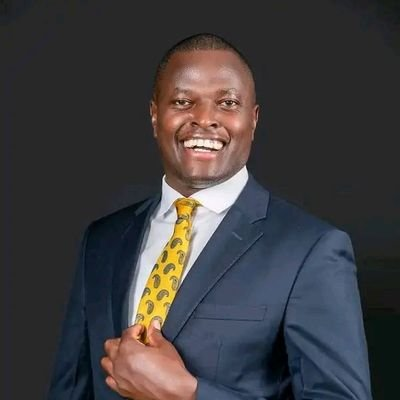

Samson Ndindi Nyoro
Visionary Leader | MP Kiharu | Entrepreneur | Economist

Visionary Leader | MP Kiharu | Entrepreneur | Economist
Ndindi Nyoro is a visionary Kenyan leader, entrepreneur, and economist. He has transformed education in Kiharu, empowered youth, and championed fiscal discipline and anti-corruption reforms. He represents a new generation of principled, results-oriented leadership.
KCPE
KCSE
Bachelor of Arts in Economics – 2009
Reduced school fees, improved infrastructure, and supported school feeding programmes.
Mentorship programs, financial literacy workshops, and skill acquisition promotion.
Improved local roads, water and electricity projects, and strengthened health facilities.
“Leadership is not about position; it’s about impact and results.”
“Every young person has the power to create wealth and change their community if they are disciplined and focused.”
“Transparency and accountability are the foundations of development.”
“Education is the greatest equalizer – it must be accessible to every child.”